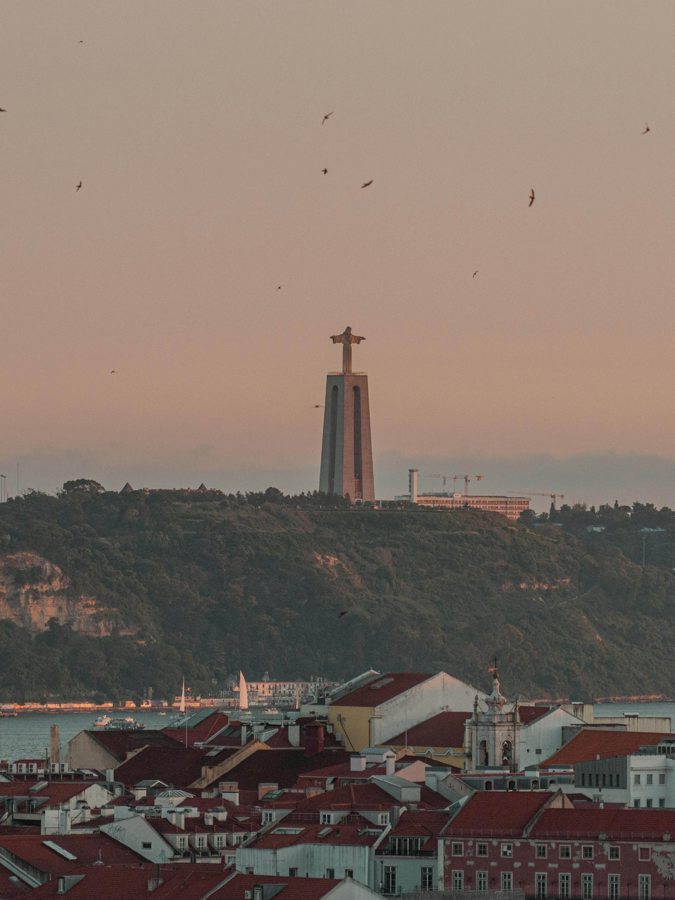
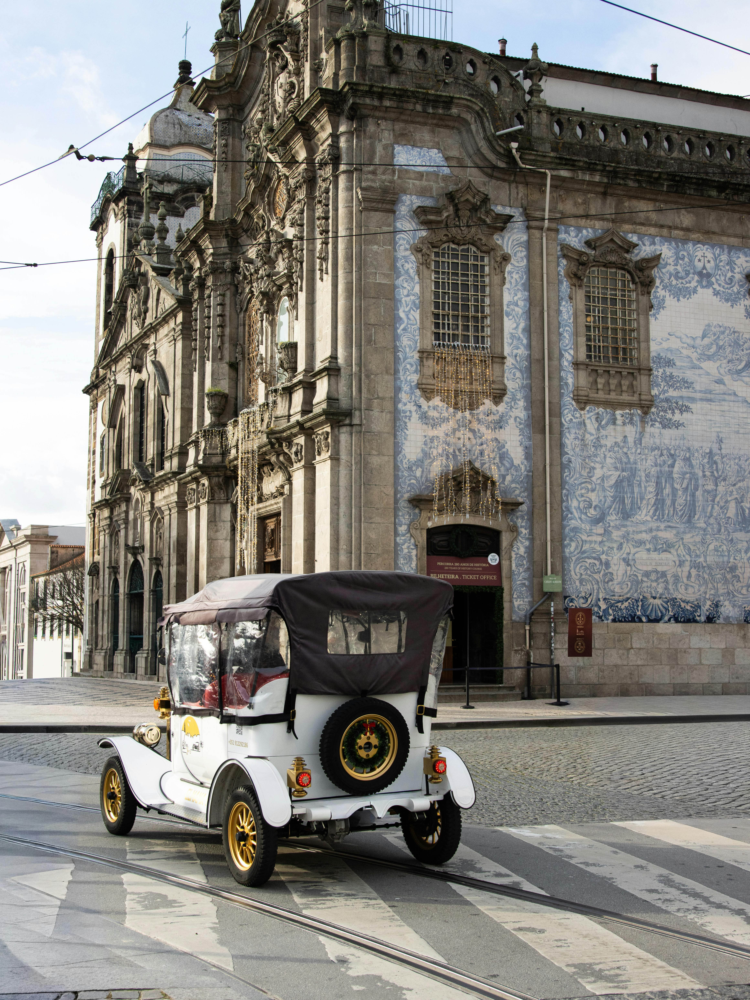

У самій країні проживає близько 10,3 млн португальців. Через масштабну еміграцію у світі налічується понад 31 млн людей із португальським корінням (найбільше — у Бразилії).

Ключове поняття португальської душі. Це специфічна, світла меланхолія, туга за домом, минулим або за чимось втраченим. Португальці люблять легкий сум.
Люди тут дуже привітні до іноземців, але в побуті поводяться стримано, спокійно і не демонструють бурхливих емоцій на публіці
Djurumani Galo Bedjo - Fadu
Традиційний жанр пісні, що виконується під португальську гітару. Фаду сповнене туги, пристрасті та драми. Воно визнане ЮСЕНКО світовою нематеріальною спадщиною.
Розписана глиняна кахля (часто біло-синя), якою прикрашають фасади будинків, палаци та вокзали. Мистецтво прийшло від арабів.
Півник Барселуш (Galo de Barcelos): Головний сувенір та неофіційний талісман країни, що символізує
Унікальний архітектурний стиль XV–XVI століть (ексклюзивний для Португалії). Будівлі прикрашали морськими канатами, якорями, коралами та королівськими символами.
Португальці п'ють каву (найчастіше міцний еспресо — «bica») по кілька разів на день, супроводжуючи це неспішною бесідою в кафе.
Португалія — батьківщина портвейну (кріпленого вина з долини Дору) та унікального свіжого зеленого вина (Vinho Verde)
Католицизм: Понад 80% населення вважають себе католиками. Португальці глибоко шанують релігійні свята та паломництво до святині у місті Фатіма.
У червні вся країна святкує дні святих Антонія
Іоанна та Петра. Вулиці прикрашають, люди смажать на вогні сардини, п'ють вино та танцюють прямо на дорогах.
це не просто спорт, а частина національної ідентичності. Матчі національної збірної або головних клубів країни (Бенфіка, Порту, Спортинг) дивляться цілими родинами в локальних
Один із найвидатніших футболістів в історії, п'ятиразовий володар «Золотого м'яча», рекордсмен
за кількістю матчів і голів на міжнародному рівні